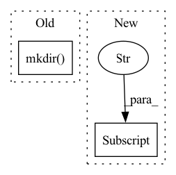

Pattern ID :21534
Before Change
else:
print(f"AdaS: Checkpoint path {checkpoint_path} doesn"t exist " +
"building directory to store checkpoints: .adas-checkpoint")
checkpoint_path.cwd().mkdir(exist_ok=True, parents=True)
with config_path.open() as f:
config = yaml.load(f)
device = "cuda" if torch.cuda.is_available() else "cpu"After Change
global best_acc
best_acc = 0 // best test accuracy
start_epoch = 0 // start from epoch 0 or last checkpoint epoch
if np.less(float(config["early_stop_threshold"] ), 0):
print("AdaS: Notice: early stop will not be used as it was set to " +
"{early_stop}, training till completion.")
In pattern: SUPERPATTERN
Frequency: 5
Non-data size: 2
Instances Fragment ID: 68832750
Project Name: mahdihosseini/rmsgd
Commit Name: 8ece8076ab99a313065ccb4221d8934922ed0ca1
Time: 2020-06-15
Author: mahdi.hosseini@mail.utoronto.ca
File Name: unpackaged/train.py
M Class Name: AnonimousClass
N Class Name: AnonimousClass
M Method Name: main(1)
N Method Name: main(1)
M Parent Class:
N Parent Class:
M File Name: unpackaged/train.py
N File Name: unpackaged/train.py
M Start Line: 144
M End Line: 265
N Start Line: 172
N End Line: 321
Before Change
parameters["patch_size"] = patch_size["2D"]
training_data, headers = parseTrainingCSV(inputDir + "/train_2d_rad_classification.csv")
shutil.rmtree(outputDir) // overwrite previous results
Path(outputDir).mkdir(parents=True, exist_ok=True)
for model in all_models_regression:
parameters["model"]["architecture"] = model
shutil.rmtree(outputDir) // overwrite previous results
Path(outputDir).mkdir(parents=True, exist_ok=True)After Change
parameters = parseConfig(testingDir + "/config_classification.yaml", version_check = False)
parameters["modality"] = "rad"
parameters["patch_size"] = patch_size["2D"]
parameters["model"] ["dimension"] = 2
// read and parse csv
training_data, headers = parseTrainingCSV(inputDir + "/train_2d_rad_classification.csv")
// loop through selected models and train for single epoch Fragment ID: 68832751
Project Name: mlcommons/gandlf
Commit Name: ab8ddbc0ae61675c312194bf9c46b3ce788d1b25
Time: 2021-03-16
Author: sarthak.pati@hotmail.com
File Name: testing/test_full.py
M Class Name: AnonimousClass
N Class Name: AnonimousClass
M Method Name: test_classification_rad_2d(0)
N Method Name: test_classification_rad_2d(0)
M Parent Class:
N Parent Class:
M File Name: testing/test_full.py
N File Name: testing/test_full.py
M Start Line: 158
M End Line: 159
N Start Line: 169
N End Line: 170
Before Change
mask, (widths[batch_id].item(), heights[batch_id].item()), interpolation=cv2.INTER_NEAREST
)
(hparams["output_mask_path"] / folder_name).mkdir(exist_ok=True, parents=True)
cv2.imwrite(str(hparams["output_mask_path"] / folder_name / f"{file_id}.png"), mask)
if __name__ == "__main__":After Change
prob = predictions[batch_id][0].cpu().numpy().astype(np.float16)
with open(str(hparams["output_path"] / folder_name / f"{file_id}.txt")) as f:
f.write(prob)
Fragment ID: 68832756
Project Name: ternaus/check_orientation
Commit Name: a75e3361032928b0a9d2215da376432ed9119128
Time: 2020-11-12
Author: iglovikov@gmail.com
File Name: check_orientation/inference.py
M Class Name: AnonimousClass
N Class Name: AnonimousClass
M Method Name: predict(4)
N Method Name: predict(4)
M Parent Class:
N Parent Class:
M File Name: check_orientation/inference.py
N File Name: check_orientation/inference.py
M Start Line: 123
M End Line: 149
N Start Line: 142
N End Line: 149